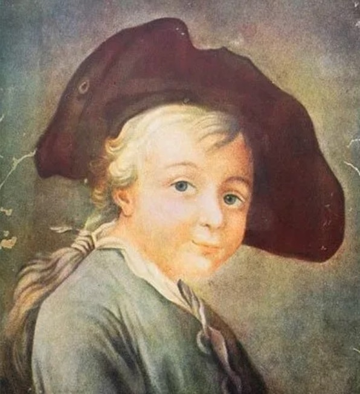
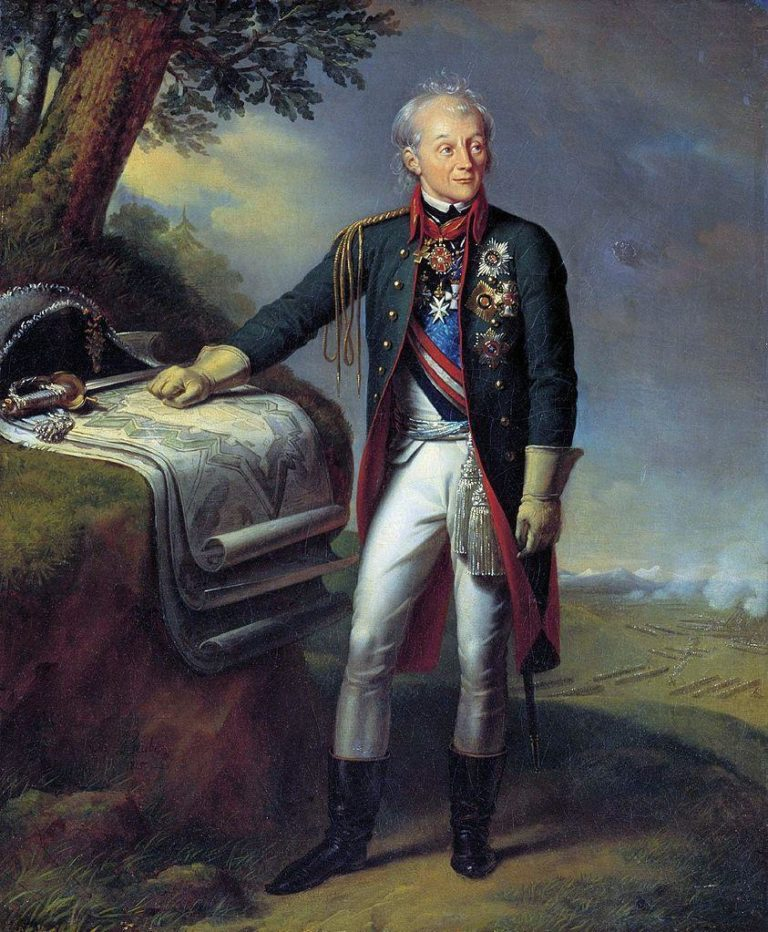
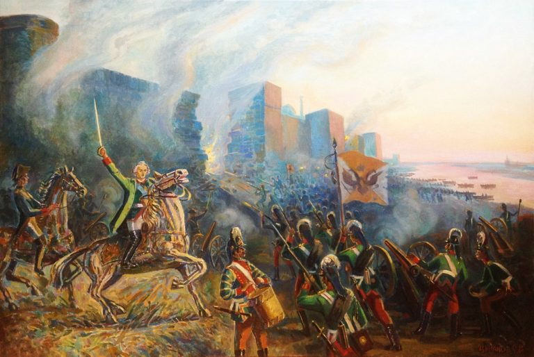
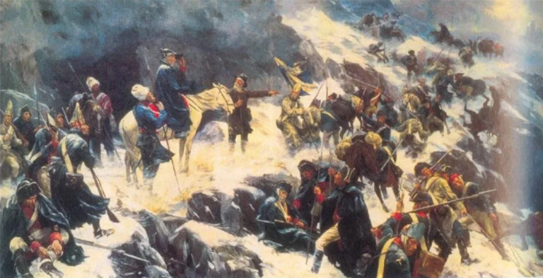
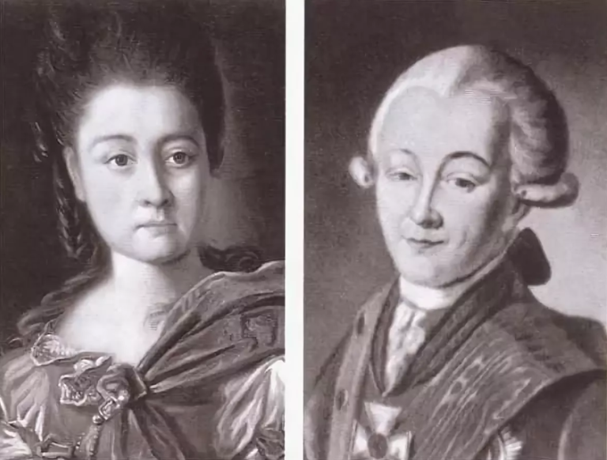
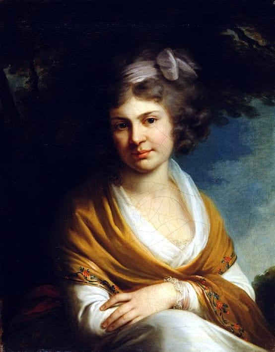
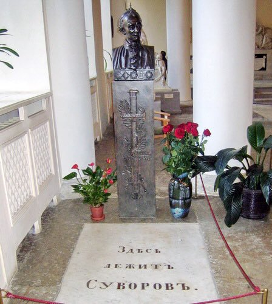

Александр Суворов — русский полководец, ставший основоположником российской военной теории, генералиссимус. Награжден всеми известными российскими орденами того времени, и семью иностранными.
Александра Суворова называют великим полководцем, гением военного дела, победным генералиссимусом. Но как бы не звучали эпитеты в его адрес, он был и остается одним из самых великих стратегов в мировой истории. Все шестьдесят боев, в которых принимала участие его армия, закончились безоговорочной победой. Его опыт ведения военных действий уникален, он ни разу не держал оборону, все его сражения были исключительно наступательными. Ему удалось укрепить границы России так, что ни один из агрессоров не рисковал их нарушить.
Помимо воинского таланта, Суворов обладал и высокими моральными качествами. Он чувствовал ответственность за своих солдат, поэтому старался сделать их жизнь хоть немного легче и комфортней. Именно Суворову принадлежит идея обновления обмундирования для военных, их форма стала более удобной и практичной. Кроме этого он стал автором нового устава и правил воспитания.
Он был ярким человеком во всех отношениях, и остался в памяти потомков не только как победитель, но и как неординарный человек.
Родился Александр Суворов 24 ноября 1730 года в Москве. Его отцом был генерал Василий Суворов, крестник самого великого Петра I. В начале своей карьеры был обычным денщиком, потом занял должность царского переводчика. В годы правления Екатерины II переведен в тайную канцелярию, где за долгие годы службы и выдающиеся заслуги получил звание генерала. Перед самой отставкой был избран сенатором. Маму Александра Суворова звали Авдотья Манукова, ее предки принадлежали к старинному дворянскому роду. Дед Суворова по материнской линии занимал должность вице-президента в Вотчинной коллегии.
Вероятнее всего предками Суворова были не только русские, но и шведы и даже армяне. Согласно семейной легенде родоначальником Суворовых был швед Сувор, получивший русское подданство в 1622 году. А по материнской линии он скорее всего получил в наследство армянскую кровь, потому что ее фамилия на армянском звучит как «ребенок».
Точную дату рождения великого полководца до сих пор устанавливают все мировые историки, и в этом есть часть его вины. Когда он написал свою автобиографию, то указал, что поступил на службу в 1742 году, когда ему исполнилось 15. С помощью простого арифметического действия легко сосчитать, что годом его рождения был 1727-й. Согласно второй записки Суворов родился в 1730-м, а согласно полкового журнала, он родился в 1729 году.
Назвать сына Александром решил его отец, который написал первый в России военный словарь. Свое имя мальчик получил не просто так. Именно древнерусский полководец Александр Невский вдохновил Василия Суворова дать сыну такое же имя. Военным делом мальчик увлекся с детства, этому способствовала шикарнейшая библиотека, которую Василий Суворов собрал в своем имении. Только-только научившись читать, Саша интересовался не детскими сказками и рассказами, а артиллерийским и фортификационным делом. Благо, пособий по этим наукам в библиотеке было более, чем достаточно.
Отец всегда мечтал, что его сын продолжит военную биографию их семьи. Однако глядя на болезненного и хилого отпрыска, не верил, что он сумеет воплотить его мечты в жизнь. Василий решил, что из него получится хороший гражданский служащий. Он даже не предполагал, что в таком хилом теле может жить такой сильный дух, что мальчик уже давно для себя решил продолжить военную карьеру. Будучи подростком, он владел такими знаниями военного дела, которыми не всегда могли похвастаться опытные военные. По этой причине Суворов решил укреплять здоровье, ежедневно, до полного изнеможения, он выполнял физические упражнения.
Во время пребывания в их доме генерала Абрама Ганнибала, Саша развлекал гостя игрой в солдатики. Опытный генерал сумел рассмотреть, насколько грамотными были действия мальчика в отношении ведения «боя», и именно он посоветовал старшему Суворову отдать сына в военные.
Военная карьера Александра Суворова началась в 1742 году, когда его взяли в Семеновский полк мушкетером. Спустя шесть лет, уже в чине офицера, он поступил на действующую военную службу. В те годы Суворов занялся совершенствованием своих знаний в этой области и поэтому записался на курсы Санкт-Петербургского кадетского корпуса. Помимо этого он вплотную занялся изучением иностранных языков.
В самом начале карьеры военного в жизни Суворова произошло событие, о котором он не забывал никогда. Во время несения караульной службы в Петергофе мимо юного Суворова проследовала Елизавета II. Она подошла к молодому военному, поинтересовалась тем, кто его родители, и узнав, что он сын верноподданного ей Суворова, одарила его серебряным рублем. Однако Александр не принял этот дар, сказал, что часовой не имеет права брать деньги во время несения службы. Царица похвалила его за рвение, и оставила рубль на земле у его ног. Она сказала, что он может забрать его после смены караула. Эта монета хранилась у Суворова до самой смерти.
В 1754 году поручик Александр Суворов получил назначение в Ингерманландский полк пехоты. Спустя год он стал служащим Военной коллегии, где находился вплоть до 1758-го. В самом начале Семилетней войны Александр проходил службу в одном из тыловых подразделений. Сразу он был провиантмейстером, прошел весь карьерный путь и стал премьер-майором. Это стало хорошим опытом в изучении работы служб, отвечающих за обеспечение тыла и снабжения армии.
В 1758 году Суворов оказывается в действующей армии. Через год он принял боевое крещение — во главе драгунского эскадрона он сумел разбить такой же эскадрон драгун из Германии. Те с позором бежали.
Это сражение датируется 1759 годом и проходило под Кунесдорфом. Оно знаменито тем, что переломило ход Семилетней войны и стало завершающим аккордом в победе над прусской армией. Зарекомендовав себя как талантливый военный, Суворов получил назначение на должность дежурного офицера при Виллиме Ферморе, который в то время был главнокомандующим. Потом в военной карьере Александра была не менее успешная Берлинская операция.
В 1760 ГОДУ НЕПОСРЕДСТВЕННЫМ КОМАНДИРОМ СУВОРОВА СТАНОВИТСЯ ГЕНЕРАЛ ФОН БЕРГ. АЛЕКСАНДРА СТАВЯТ ВО ГЛАВЕ ДРАГУНСКИХ И ГУСАРСКИХ ОТРЯДОВ, КОТОРЫЕ ДОЛЖНЫ БЫЛИ ПРИКРЫВАТЬ РУССКУЮ ДИВИЗИЮ, ОТХОДЯЩУЮ К БРЕСЛАВЛЮ.
Помимо этого они занимались уничтожением запасов продуктов вражеской армии. В 1762 году Суворову присвоили звание полковника, и он получил в подчинение Астраханский полк. Его усердие в воинской службе не осталось незамеченным императрицей, которая вознаградила его собственным портретом. Именно это время стало настоящим переломом в биографии Суворова, с этого момента он стал знаменитым.
В 1763-1769-м годах Александр Васильевич возглавлял Суздальский полк, местом дислокации которого была Новая Ладога. Именно этими годами датируется написание «Полкового учреждения», своеобразного устава, по которому велась воспитательная работа с солдатами, их боевая подготовка и условия внутренней службы. В 1768 году Суворов удостоился звания бригадир.
Настоящим полководцем Суворов стал именно во времена правления Екатерины II. Этому способствовали и две Русско-турецкие войны, которые он выиграл. В 1770 году Суворова произвели в генерал-майоры. После того, как он разгромил турков в Туртукайском и Козлуджинском сражениях, ему присвоили звание генерал-поручика. Это были годы, когда непосредственным командиром Суворова был Петр Румянцев. То, что Суворов постепенно становится настоящим полководцем, стало видно во время второй Русско-турецкой войны. В 1788-м имя Суворова прогремело во время битвы за город Кинбурн. Именно там он был впервые серьезно ранен.
Эта победа принесла полководцу серьезную награду, он получил орден Андрея Первозванного. Второе ранение Александр Васильевич получил во время сражения в Очакове, где войска под его руководством штурмовали турецкую крепость. В перерыве между этими двумя войнами Суворов участвовал в подавлении пугачевского бунта. За это он получил персональную награду от императрицы, которая измерялась двумя тысячами червонцев. Осенью 1789-го Суворов снова принимает участие в сражении. В этот раз при Рымнике, когда 25-тысячная армия русско-австрийских военных разгромила превышающее их в четыре раза войско турецкого Юсуф-паши. И снова во главе армии-победителя был непобедимый Суворов.
Эта победа лишний раз продемонстрировала величие русской армии, и стратегическая обстановка выгодно изменилась в пользу России. В 1790-м Суворов снова подтвердил свое звание выдающегося полководца, когда перед ним пала турецкая крепость Измаил, до этого абсолютно неприступная. Это сражение стало историческим, по важности оно не уступает Полтавскому и Бородинскому.
В 1796-м на престол вместо умершей Екатерины взошел Павел I, отношения с которым у Суворова никак не складывались. В 1797 году император издает указ об отставке Александра Васильевича. В начале того года он оказался в ссылке в родовом имении, однако, когда политическая ситуация в Европе накалилась, о нем немедленно вспомнили. Павел Первый получил прошение правителей Британии и Австрии, чтобы он поставил именно Суворова командовать союзными войсками.
ОН ПРОВЕЛ ИТАЛЬЯНСКУЮ КАМПАНИЮ, ПРИЧЕМ ТАК, ЧТО ОНА ДО СИХ ПОР ЯВЛЯЕТСЯ ГОРДОСТЬЮ ВОИНСКОГО МАСТЕРСТВА.
Суворов смог провести несколько блистательных боев, закончившихся сокрушительным разгромом противника. Войска под руководством Суворова вскоре гордо шагали по Милану и Турину, сокрушительное поражение французской армии произошло и на речке Треббия. После этого сражения от вражеской армии осталась половина.
Остатки французской армии под руководством генерала Жубера отправилась на Пьемонт. В августе того же года они оккупировали город Нови-Лигуре. Армия союзников под руководством Суворова приняла этот вызов. Сражение длилось на протяжении восемнадцати часов, французы потерпели полное фиаско. Семь тысяч их солдат навечно остались на этом поле боя. Смерть настигла и командующего Жубера. Это сражение имело решающее значение для окончания Итальянского похода. Император Павел I был просто в шоке от блестящей победы, и отдал распоряжение чтить Суворова на уровне особ императорской фамилии.
В 1799 году Суворов предпринял переход через Альпы, который с тех пор навечно внесен историю побед российского оружия. Император был в полном восхищении, ведь Суворову удалось выйти победителем в сражении с самой природой. После покорения горных хребтов Швейцарии и в память о его былых заслугах, Суворову присваивают звание генералиссимуса. Выше этого звания военная иерархия не знает.
Полководец стал создателем абсолютно новой военной доктрины. Используя личный опыт ведения боя, он сумел создать революционную стратегию и тактику ведения боя. Его книгу под названием «Наука побеждать» держали на столе самые известные русские военные начальники. Среди лучших воспитанников генералиссимуса можно назвать Николая Раевского, Михаила Кутузова, Петра Багратиона. Суворов имеет все существующие высшие военные награды, причем орден Святого Георгия всех 3-х степеней.
Заслуги Суворова отмечены еще при его жизни. В России начали появляться суворовские училища, где растили достойные кадры для армии. Орден Суворова доставался исключительно за проявленный героизм на фронтах Великой Отечественной войны. Имя Александра Суворова носят морские суда, среди которых есть и боевые.
Если на полях военных сражений Суворова ждал успех, то в личной жизни он потерпел полное фиаско. Военное ремесло настолько увлекло молодого Суворова, что он посвятил ему лучшие годы, когда приходит любовь, создается семья, рождаются дети. К сорока годам у Суворова не было ничего, кроме службы и побед в военных сражениях. Эта ситуация очень не нравилась его отцу, который и решил заняться устройством личной жизни любимого отпрыска. Он нашел для сына подходящую партию и сумел обвенчать их. В итоге Александр женился на Варваре Прозоровской, 23 лет от роду, дочери обедневших дворян.
В конце 1773-го они помолвились, а в начале следующего года поженились. Они были абсолютно разными — маленький тщедушный 40-летний жених и пышущая здоровьем красавица-невеста.
Но не только внешне они отличались друг от друга. Александр имел отличное образование, он владел пятью языками, тогда как его избранница не могла написать слово, чтобы не сделать в нем ошибку. Ее интересовали исключительно наряды и светские приемы.
В СЕМЬЕ ЦАРИЛИ НАПРЯЖЕННЫЕ ОТНОШЕНИЯ. КОГДА РОДИЛАСЬ ДОЧЬ НАТАЛЬЯ, ОНИ УЖЕ ССОРИЛИСЬ ПОСТОЯННО. СУВОРОВ МНОГО ВРЕМЕНИ ПРОПАДАЛ НА ВОЙНЕ, А ЕГО СУПРУГА РАЗВЛЕКАЛАСЬ, КАК МОГЛА.
Узнав о том, что супруга ему изменяет, Александр не стал это терпеть и подал прошение развестись. Однако расторжение брака оказалось не таким легким, против него была императрица. Она наградила Суворова очередной медалью и просила оставить все, как есть.
В 1784-м полководец опять заговорил о разводе, причем во всеуслышание назвал имя человека, с которым ему изменяет жена. Но тут родился сын Аркадий, которого Александр не собирался признавать своим. Только спустя двенадцать лет он признал его сыном. Расторгнуть брак снова не удалось, но с тех пор супруги жили каждый своей жизнью. Суворов давал на содержание жены 1200 рублей, дочь отправил на воспитание в Смольный институт и запретил ей встречаться с мамой.
После признания Аркадия своим сыном в 1796 году Александр определил его в юнкера. Сын полководца прожил короткую жизнь, утонул, когда ему исполнилось 26. Однако успел четыре раза сделать Суворова дедом. У дочери Суворова родилось шесть наследников. Суворов и его жена так и прожили каждый в своем одиночестве до самой смерти.
После героического перехода через Альпы Суворов серьезно заболел. Вернувшись в свое имение в Кобрине, он слег. А в это время его ждали в Петербурге, чтобы оказать положенные почести. К полководцу направили доктора, который смог поставить его на ноги.
По приезду в Петербург Суворов снова почувствовал резкое недомогание и слег, чтобы больше уже не подняться. 18 мая 1800 года его не стало. На церемонии прощания император отсутствовал. Местом упокоения Александра Суворова стала Благовещенская церковь Александро-Невской лавры.